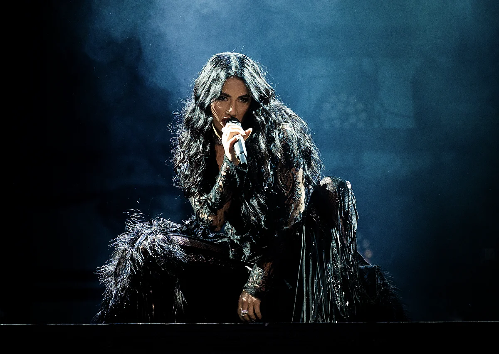
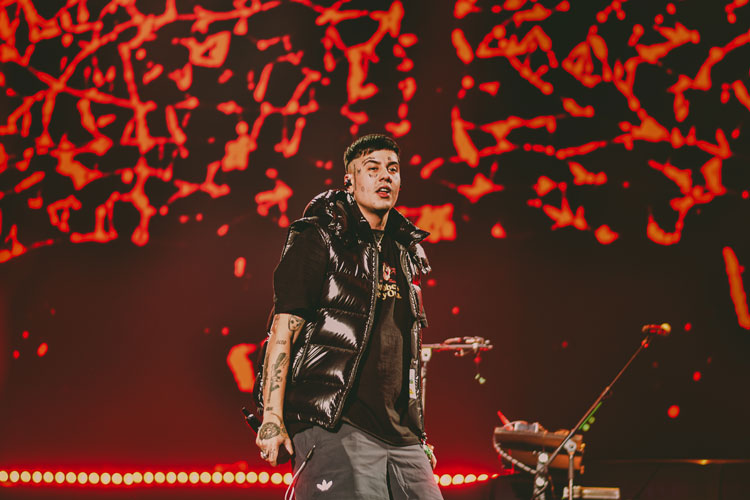
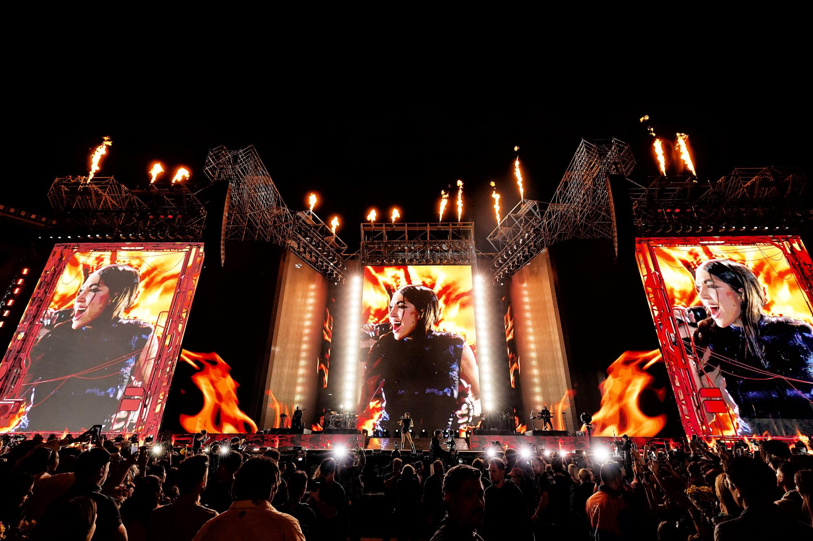

Sobre VibrAR
VibrAR es un festival que nacio en 2006 con la idea de celebrar la musica argentina en todas sus formas.
El festival reúne artistas de distintos géneros y genera una experiencia musical única para todos los asistentes.
Festival de musica argentina: Rock, Pop, Trap, Urbano y Rap.
VibrAR es un festival que nacio en 2006 con la idea de celebrar la musica argentina en todas sus formas.
El festival reúne artistas de distintos géneros y genera una experiencia musical única para todos los asistentes.
VibrAR Fest abarca distintos géneros para todos los gustos musicales:
Disfrutá de los mejores momentos de ediciones anteriores y mirá los videos destacados de nuestros artistas



Disfrutá del último video oficial de uno de nuestros artistas principales.
Escuchá un fragmento de la canción “Fanático” de Lali Espósito.
Mirá nuestro video promocional y sentí la energía del festival.
El festival se realizará en el Hipódromo de San Isidro, Buenos Aires, accesible por transporte público y con estacionamiento disponible.